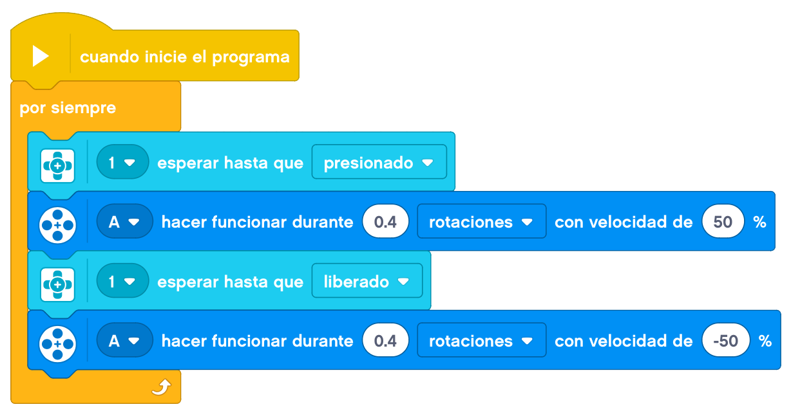

En este tema, construiremos una pinza que se accione al extender el brazo, para que podamos coger cosas que no están a nuestro alcance.
Este proyecto lo dividiremos en dos partes. Por un lado haremos la pinza telescópica que al abrirla se
encoja y al cerrarla se extienda. Una vez tengamos el mecanismo, le añadiremos un motor y un botón para
accionarlo. Si apretamos el botón la pinza se extiende y si lo soltamos, la pinza se encoje.
A continuación, mostraremos un ejemplo de construcción de un brazo telescópico base.
Empezaremos por montar las pinzas que van a cojer los objetos.
Con esto tendríamos nuestras pinzas extensibles y la primera parte del proyecto terminada.
Ahora vamos a añadirle el motor y el botón.

Enganchamos los cables al bloque EV3, y probamos el brazo telescópico.
La programación para que nos funcione correctamente el botón de nuestra pinza podría ser la siguiente.

Ahora podemos probarlo accionándolo desde el botón.